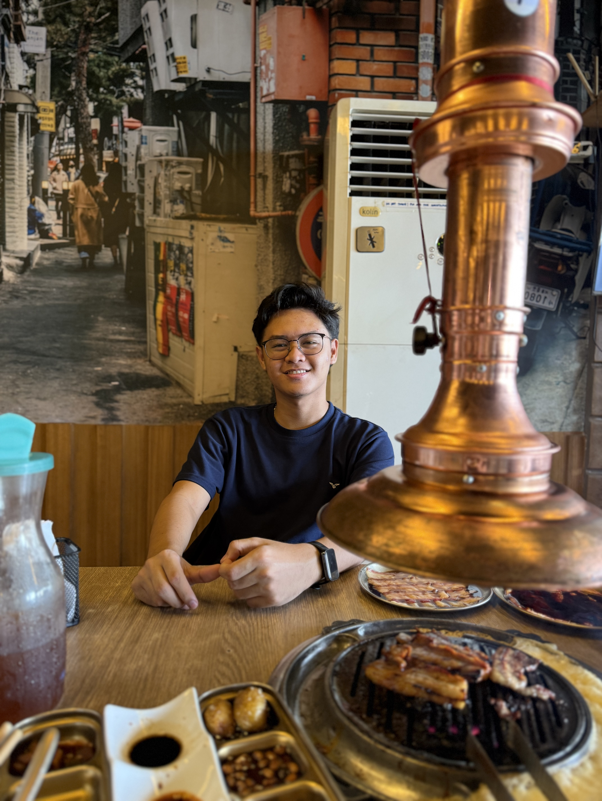

About Me
Hi, I’m Efrain Manuel Santuyo Mercado, a Computer Programmer based in Ipil, Zamboanga Sibugay. I specialize in HTML, CSS, JavaScript, and TypeScript (TSX), with backend development experience using XAMPP and Supabase.
I’m passionate about building community-driven applications, designing clean user interfaces, and solving real-world problems with code. When I’m not coding, I enjoy learning new technologies and collaborating on projects.
View My Projects